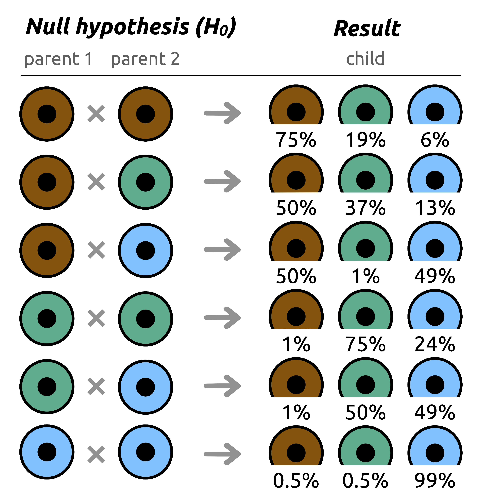
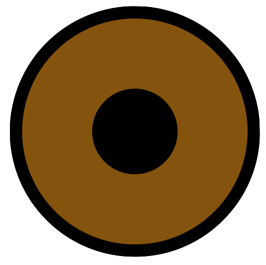

The famous “ p-value ”, as it is used today, simply answers the following question: given our beliefs about the world around us, should the result of an experiment be considered ordinary or extraordinary in the world as we believe it to be?
The p-value being a probability (the “ p ” standing for probability), it necessarily falls between 0 and 1 — or between 0% and 100%. By convention, it has been decided that the boundary between ordinary and extraordinary is the threshold of 0.05 (5%): assuming that our beliefs about the world are true, a result that had less than a 5% chance of occurring but did so nonetheless must be considered extraordinary. On the contrary, a result that had a greater than 5% chance of occurring and did so is not extraordinary — one may say that it is ordinary (“ normal ”), that is, consistent with what one believed to know about the world.
An extraordinary result compels us to revisit and question our beliefs: if they were true in the world as we conceived it, observing such a result would have been far too unlikely. Conversely, an ordinary result is not sufficient to call our beliefs into question: if they are true in the world as we conceive it, observing such a result is possible, not unlikely. However, an ordinary result does not prove that our initial beliefs are true — it simply means that we have no good reason (not enough evidence) to consider them false.
A tale of eye colour
Before discussing p-values, let us take a concrete example to illustrate what we mean by ordinary and extraordinary. A child is born with green eyes — is this ordinary or extraordinary? To settle the matter, we must first define what ordinary means, that is, what one would have expected. Without context and without additional information, this question cannot be answered. In fact, our beliefs play the role of context here: knowing (or believing) that the parents have brown or green eyes completely changes the interpretation of the result. And this is a key point: the p-value always requires a context, an initial belief. By convention, this belief is called the null hypothesis, denoted $H_0$.
To calculate a p-value, the principle is simple: we always place ourselves in a world where $H_0$ — our initial belief — is true, and we ask ourselves: in that world, what was the probability of observing this result? And it is indeed in that world that we decide whether the result is ordinary or extraordinary, by considering the 5% threshold. It is this very result that will determine whether our initial belief ($H_0$) holds up, or whether it needs to be reconsidered.
In the case of the child's eye colour, one can consider several worlds, several null hypotheses (the eye colour of both parents) and, by drawing on the laws of genetics for this example, observe in which cases, in which worlds, the result (the child has green eyes) becomes extraordinary (Figure 1).

For a child whose both parents have green eyes, the probability of the child also having green eyes is 75%: nothing extraordinary here (Figure 1). On the other hand, if both parents have blue eyes, the chances of the child having green eyes drop to 0.5%: were this to occur, we would speak of an extraordinary result. A child born to two brown-eyed parents with blue eyes? With a 6% chance, the result is admittedly unlikely, but remains ordinary. This makes it clear: it is our belief ($H_0$) about the parents' eye colour that determines whether the result is ordinary or extraordinary. Let $C$, $P_1$ and $P_2$ denote the random variables associated respectively with the eye colour of the child, parent 1 and parent 2. Using standard notation, we can write the following conditional probabilities:
$\mathbb{P}(C=$ $\mid P_1 = $ and $P_2 = $ $) = 0.75$
$\mathbb{P}(C=$ $\mid P_1 = $ and $P_2 = $ $) = 0.005$
$\mathbb{P}(C=$ $\mid P_1 = $

and $P_2 = $ $) = 0.06$At this stage, several things may have already caught your attention: yes, the 5% threshold is entirely arbitrary, and someone choosing a different one could reach different conclusions. This limit will be discussed in the section “ Beyond the p-value ”. More subtly: Figure 1 gives in particular the probability that a child has green eyes given that their parents do — but it says nothing about the inverse probability: that of both parents having green eyes given that their child does. As highlighted in the previous section, this confusion is a common pitfall that is worth avoiding.
The famous p-value
The probabilities calculated previously could be likened to a p-value, without strictly being one. But we are nearly there! Formally, the p-value is the probability of obtaining a result at least as extreme as the one observed in the world where $H_0$ is true. In order to calculate the probability of obtaining a value “ at least as extreme” , a numerical random variable is required, rather than one associated with eye colour. Denoting $X$ as the quantity measured and $X_{observed}$ as the result of the experiment, using standard notation, we write: $$\text{p-value} \coloneqq \mathbb{P}(X \ge X_{\text{observed}} \mid H_0 \text{ true})$$
It all depends on the direction in which the deviation is measured. If the values that are at least as extreme as those of interest are the smallest — rather than the largest — the p-value is written differently: $$\text{p-value} \coloneqq \mathbb{P}(X \le X_{\text{observed}} \mid H_0 \text{ true})$$
With this definition, two cases present themselves:
- if $\text{p-value} \lt 0.05$: the result is extraordinary, i.e., in a world where $H_0$ is true, we had less than a 5% chance of observing this result (or a result just as extreme). And yet we did indeed observe it... There are two explanations: either we were extraordinarily lucky to observe this unlikely result, or we are simply not in the world where $H_0$ is true. The second conclusion being the more reasonable one, we must consider it and conclude: we were mistaken about our initial belief $H_0$. In this case, we say that we reject the null hypothesis.
- if $\text{p-value} \geq 0.05$: the result is ordinary, i.e., in a world where $H_0$ is true, we had more than a 5% chance of observing this result. Here, in the world of $H_0$, there is nothing out of the ordinary — the result we obtained is entirely plausible: it does not go against our initial belief. There is therefore no good reason to think that we were mistaken about $H_0$. In this case, we say that we fail to reject the null hypothesis. One must nonetheless remain cautious: failing to reject $H_0$ is not the same as declaring it true — it simply means that the observed result does not allow us to conclude that it is false. Just because the result could occur in the world of $H_0$ does not mean that $H_0$ is necessarily true.
A few metaphors
To clearly distinguish between rejecting a hypothesis, a belief, because we have good reason to think it is false, and failing to reject it due to insufficient evidence against it, here are a few metaphors.
$H_0$: “ Father Christmas does not exist ”. If a child catches a glimpse of Father Christmas in the house on Christmas Eve, the matter is settled: Father Christmas exists (rejection of $H_0$). If they saw nothing all night, two explanations present themselves: either Father Christmas came and went without making a sound, or... their parents lied to them and Father Christmas does not exist. In either case, $H_0$ cannot be rejected, but they cannot conclude that Father Christmas does not exist.
$H_0$: “ The pupil is not a cheater ”. If a pupil is caught red-handed cheating, we have proof that they are cheating (rejection of $H_0$). On the other hand, if they are not caught in the act, two possibilities remain: either they are cheating without our noticing, or they are simply not cheating. In either case, $H_0$ cannot be rejected, but one cannot conclude that the pupil is not cheating.
$H_0$: “ Extraterrestrials do not exist ”. If researchers observe little green creatures on an exoplanet thousands of light-years away, they can conclude: extraterrestrials exist (rejection of $H_0$)! If they observe nothing, two possibilities remain: perhaps they looked in the wrong place — or with insufficient instruments —, or perhaps we are simply alone in the universe. In either case, $H_0$ cannot be rejected, but no one can claim that extraterrestrials do not exist.
The alternative hypothesis $H_1$
When defining a null hypothesis $H_0$, it is always accompanied by a so-called alternative hypothesis, denoted $H_1$. These two hypotheses are complementary: $H_1$ is exactly the opposite of $H_0$. In the previous examples, we had for instance $H_1$: “ Father Christmas exists ”, $H_1$: “ The pupil is cheating ”, and so on. Thus, when p < 0.05 and the null hypothesis $H_0$ is rejected, $H_1$ is accepted — what was extraordinary in the world of $H_0$ becomes entirely ordinary in the world of $H_1$. If the p-value is less than 0.05, the result of the experiment suggests that $H_1$ describes reality better than $H_0$. If the p-value is greater than or equal to 0.05, then the level of evidence is not sufficient to shift towards $H_1$: either $H_0$ is true, or it is false but we have not accumulated enough evidence to prove it.
You may have noticed in the previous examples that $H_0$ is by no means chosen at random: it is the default world — the world where nothing extraordinary happens. $H_0$ is the naive hypothesis and it assumes that nothing interesting is at work. In the world of $H_0$, Father Christmas and extraterrestrials do not exist, the pupil is not cheating, climate change does not exist, there is no link between two phenomena, air pollution does not cause respiratory diseases, ultra-processed foods have no link with metabolic diseases or cancers, and so on. In short: everything is fine, the world is ticking along nicely, and that is perfectly fine. In the world of $H_0$, one believes in nothing. And if something odd occurs — no need to panic, it is simply the result of chance, a mere coincidence. In the world of $H_0$, everything that deviates from the ordinary can be explained by chance.
$H_1$ is the world on the other side — the one where something is truly happening. Father Christmas and extraterrestrials exist, the pupil is cheating, climate change exists, two phenomena are indeed linked, air pollution increases the risk of respiratory diseases, ultra-processed foods increase the risk of metabolic diseases or cancers, and so on. But this world is not easily reached: one only shifts towards $H_1$ if what is observed makes $H_0$ truly too unlikely to be true. In other words, a sufficiently high level of evidence is required to shift towards $H_1$ and abandon $H_0$. These two worlds coexist, but one must always assume that the world of $H_0$ is true: it is up to $H_1$ to bring evidence of its existence, never the other way around. By default, $H_0$ is therefore always true, and it is rejected when enough evidence against it has been accumulated. And in general, this level of evidence is the 5% threshold: if a result had less than a 5% chance of occurring in the world of $H_0$, one is permitted to shift towards $H_1$.
What if we did the opposite — what if we started from the world of $H_1$ by default? It would be a disaster. We would see effects everywhere, we would believe every coincidence, and chance would cease to exist. The world would become unreadable — drowning in hasty conclusions and false discoveries. Worse still: defaulting to $H_1$ means falling into a trap and staying there indefinitely. If one believes in something from the outset, why look for evidence? Every observation that confirms what one already believed becomes further proof. And when one does not observe what was expected? It is not that one is wrong — or that one's world does not exist — it is simply that one was unlucky this time. Those who default to $H_1$ are always right, one way or another. $H_0$ is there for exactly that reason: to keep us reasonable, to stop us from crying wolf before we have the proof.
Let us revisit the extraterrestrial situation, this time defaulting to $H_1$: $H_1$: “ Extraterrestrials exist ”. If researchers observe little green creatures on an exoplanet thousands of light-years away, they can conclude: you see, extraterrestrials exist (failure to reject $H_1$)! If they observe nothing, since they already believe in extraterrestrials, they will tell themselves: we must have looked in the wrong place — or with insufficient instruments. Here, $H_1$ is not rejected either: failing to observe extraterrestrials is not proof of their non-existence. This situation is truly very problematic, as there is no way of showing that $H_1$ is false.
In everyday life, many of us default to $H_1$. They believe what they want to believe, they notice what confirms their beliefs, and they forget the rest. No matter what happens, no matter what they observe — they decided yesterday that their belief was true, and it will still be true tomorrow. They are no longer looking for the truth — they are looking to be right. Conversely, some people do start from the world of $H_0$, but refuse to leave it and move into the world of $H_1$, even when faced with a mountain of evidence contradicting $H_0$. No matter what happens, no matter what they observe — they decided yesterday that the world of $H_1$ was false, and it will still be false tomorrow. In both cases, these people may fall victim to what is known as confirmation bias — but that is a story for another time... The next time you see someone clinging to their beliefs and impervious to any questioning, take a moment to ask yourself which world they are stuck in.
Back to our eyes: over to you
In this section, we allow ourselves the slight abuse of notation that $\text{p-value} \coloneqq \mathbb{P}(X = X_{\text{observed}} \mid H_0 \text{ true})$. This example, whilst admittedly imperfect and somewhat removed from reality, has the merit of illustrating the notion of p-value and the reasoning associated with it. It should be taken with caution, as it has a number of limitations and does not faithfully reflect the reality of the p-value. For an exact example, head to the end of the page or to the next section “ The p-value in action ”.
Let $C$, $P_1$ and $P_2$ be the random variables associated respectively with the eye colour of the child, parent 1 and parent 2. A child is born with green eyes. We wish to determine whether both parents have blue eyes. In this situation, the hypotheses are:
$H_0 : $ both parents have blue eyes
$H_1 : $ at least one of the two parents does not have blue eyes
By definition, the p-value amounts to calculating $\mathbb{P}(C=$ $\mid H_0)$, which is none other than $\mathbb{P}(C=$ $\mid P_1 = $ , $P_2 = $ $)$. According to Figure 1, this probability is equal to 0.005, giving us a p-value of 0.005: the probability of a child being born with green eyes given that both parents have blue eyes is 0.5%. If both parents have blue eyes, the birth of a child with green eyes would be an extraordinary occurrence. Since 0.005 < 0.05, we must reject the null hypothesis $H_0$ and consider the alternative hypothesis $H_1$. We have accumulated sufficient evidence (< 5%) to call into question the world in which $H_0$ is true, that is, the world in which both parents have blue eyes. Our observation is more plausible in the world of $H_1$ than in that of $H_0.$ We can reasonably conclude that at least one of the two parents does not have blue eyes.
If you have followed this reasoning, then congratulations — you are (almost) there: you now know what a p-value is!
Try it yourself!
Change the eye colour of the child and choose your null hypothesis (the eye colour of the parents), then observe the conclusion you can draw using the p-value.
You may have noticed here that the conclusion depends on the null hypothesis $H_0$. In general, a result is considered "compatible" with $H_0$ if it has more than a 5% chance of occurring in the world where it is true. But the issue here is that for one and the same observation (for instance, the child has green eyes), there may be several null hypotheses $H_0$ for which this result has more than a 5% chance of occurring (both parents have brown eyes 19%, or both parents have green eyes 75%). Several worlds are therefore compatible with one and the same observed result.
This is why this example is somewhat imperfect. Normally, $H_0$ represents a "default" situation, where nothing particular is happening — a kind of natural reference point. Yet here, there is no truly "normal" situation: there is no reason to consider it more natural for the parents to have brown eyes rather than green, or vice versa. The world of $H_0$ is not clearly defined, which makes the interpretation unstable.
A tale of trees 🌳
Let us take an example that this time uses the true definition of the p-value: $\text{p-value} \coloneqq \mathbb{P}(X \geq X_{\text{observed}} \mid H_0 \text{ true})$. Eve is taking a walk in a forest made up exclusively of oak trees and beech trees; she is currently in an area rich in oak trees but spots a tree that appears to be taller than the others and wonders whether it might be a beech tree, beeches being on average taller than oaks. The question she asks herself is: how can I decide whether this tree is a tall oak among the oaks, or a beech among the oaks? To answer her question, the answer is now obvious: she is going to use the p-value!
Since she is in an area rich in oak trees, her null hypothesis, her initial belief, is that the tree is an oak. As the forest is made up exclusively of oak trees and beech trees, the alternative hypothesis is that the tree is a beech, such that:
$$\begin{align*} & H_0 : \text{The tree is an oak} \\ & H_1 : \text{The tree is a beech} \end{align*} $$First of all, Eve needs to define her null hypothesis $H_0$, that is, to know the normal height that an oak tree should have. According to her father, a forest ranger, the distribution of the heights of the oak trees in this forest (in m.) follows a normal distribution with mean $\mu = 18$ and standard deviation $\sigma = 4$. Let $H$ be the random variable describing the height of a tree in this forest. Suppose that Eve's tree measures 25 m, and let us try to determine its species using the p-value method.
By definition of the p-value, we simply need to calculate the probability of measuring at least 25 m given that we are an oak (the probability of observing a value at least as extreme as the one observed given that $H_0$ is true). And, as we saw in the previous section, calculating such a probability amounts to measuring the area under the density curve associated with the random variable representing the height of oak trees. Here, this area is therefore bounded between 25 and +∞. No need to worry about this infinite upper bound: since the height follows a normal distribution, very high values are extremely rare, and the curve flattens so rapidly towards the horizontal axis that the area beyond a certain point becomes entirely negligible. Mathematically, Eve must calculate $\mathbb{P}(H \ge 25 \mid \text{the tree is an oak})$. Two cases then present themselves:
- if $\text{p-value} \lt 0.05$ then this means that a tree has less than a 5% chance of measuring at least 25 m if we are an oak: if it were truly an oak, observing this result would be extraordinary. Observing this result in the world where $H_0$ is true is therefore too unlikely: she shifts towards $H_1$, concluding that the tree is a beech.
- if $\text{p-value} \geq 0.05$ then this means that a tree has more than a 5% chance of measuring at least 25 m if we are an oak: if it were truly an oak, this result would have been likely, ordinary. There is not enough evidence to reject $H_0$ and shift towards $H_1.$ Eve will therefore conclude that the tree is an oak.
I invite you to carry out the test yourself: look at what the probability of measuring more than 25 m is, given that we are an oak. You can also test other values and define the critical threshold: from what height should Eve consider that the trees are beeches?
Rejection region
The rejection region of $H_0$ is the region (the interval) that contains all results considered to be extraordinary (too unlikely) in the world of $H_0$. If the result of an experiment falls within this region, it means that the level of evidence (p < 0.05) required to reject $H_0$ has been reached and that it is possible to shift towards $H_1$. If the result falls outside this region, it is considered ordinary and does not allow us to reject $H_0$ and shift towards $H_1$. The critical value is the value of the random variable that splits the region into two asymmetric parts: on one side the ordinary results in the world of $H_0$, and on the other side the extraordinary results. It is this critical value that defines precisely the boundary between the two worlds $H_0$ and $H_1$.
In this example, the critical value (height of the tree) is precisely 24.58 m such that:
$\mathbb{P}(H \geq 24,58 \mid \text{the tree is an oak}) = 5\%$
$\mathbb{P}(H \lt 24,58 \mid \text{the tree is an oak}) = 95\%$
The probability of measuring at least 24.58 m given that we are an oak is precisely equal to 5%. This height therefore defines the boundary between the two worlds $H_0$ and $H_1$ (being an oak or a beech). When Eve looks at the height of a tree, if it is strictly greater than 24.58 m then she rejects $H_0$ (the tree is an oak) and concludes that the tree is a beech, since the result falls within the rejection region (that is, there was less than a 5% chance of observing a result at least as extreme if we were an oak). If the height of the tree is less than or equal to 24.58 m, Eve cannot reject $H_0$ since the result falls outside the rejection region (that is, there was more than a 5% chance of observing a result at least as extreme assuming the tree is an oak). To sum up: if the tree measures 24.58 m or less, Eve concludes that it is an oak, otherwise she concludes that it is a beech.
The type I error
$\mathbb{P}(H \geq 24.58 \mid \text{the tree is an oak}) = 5\%$ means precisely that the probability of a tree measuring at least 24.58 m given that it is an oak is equal to 5%. As we saw in the previous section, another way of interpreting this result is to say that 5% of oaks measure more than 24.58 m. Thus, if at every tree she encounters Eve applies her reasoning based on the p-value, she will classify all trees measuring more than 24.58 m as beeches. But precisely 5% of oaks truly do measure more than 24.58 m! She will therefore be wrong in 5% of cases: by applying this method to 1,000 trees measuring more than 24.58 m, all 1,000 will be classified as beeches, whereas 50 are in fact tall oaks! By taking a 5% threshold to differentiate the ordinary from the extraordinary, the risk of wrongly rejecting the null hypothesis $H_0$ — that is, rejecting it when it is true (classifying a tree as a beech when it is in fact an oak) — is called the Type I error — or $\alpha$ risk — and is exactly 5%, but that is a story for another time...